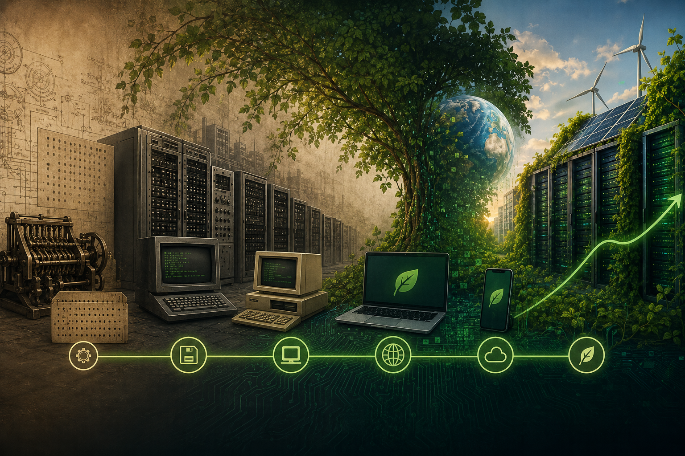
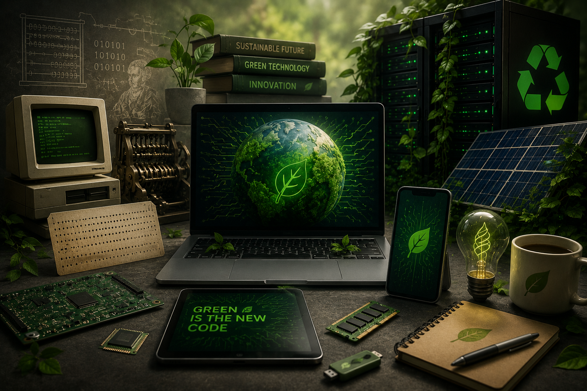

Empresa Genérica de Computação Verde
História da Computação Verde
-
Origens e o Marco da Energy Star (Início dos anos 90)
- 1992: O conceito de computação verde ganhou destaque público quando a Agência de Proteção Ambiental dos EUA (EPA) lançou o programa Energy Star.
- Objetivo Inicial: O foco era reduzir o consumo de energia em equipamentos de escritório, especialmente computadores, promovendo o desenvolvimento do "modo de hibernação" ou suspensão.
- Expansão: O selo Energy Star logo se expandiu para outros eletrônicos, como monitores e impressoras, tornando-se um padrão global de eficiência.
-
Consolidação e Conscientização (Anos 2000)
- Lei de Política Energética (2005): O Congresso dos EUA reforçou a necessidade de produtos energeticamente eficientes, impulsionando ainda mais o programa Energy Star.
- Conscientização Ambiental: Com o aumento das discussões sobre mudanças climáticas e aquecimento global, empresas começaram a perceber a necessidade de práticas mais sustentáveis.
- Gestão de Resíduos: Surgiram normas mais rigorosas para o descarte de componentes tóxicos, como chumbo e mercúrio em computadores.
-
A Era da Virtualização e Data Centers (Anos 2010 - 2020)
- TI Verde (Green IT): A computação verde evoluiu para incluir todo o ciclo de vida do equipamento, não apenas o consumo de energia em uso.
- Virtualização: A tecnologia de virtualização de servidores permitiu que várias máquinas virtuais funcionassem em um único servidor físico, reduzindo drasticamente o consumo de energia e a necessidade de hardware físico.
- Computação em Nuvem: A nuvem tornou-se um pilar da computação verde, centralizando o processamento em data centers altamente eficientes, em vez de depender de servidores individuais ineficientes.
- Legislação: Em 2010, iniciativas como a Lei de Recuperação dos EUA impulsionaram a adoção de tecnologias verdes.
-
O Futuro e a Inteligência Artificial (2020 - Presente)
- IA e Sustentabilidade: Com o aumento da Inteligência Artificial, o consumo de energia em data centers tornou-se uma preocupação crítica.
- Refrigeração a Líquido: Para lidar com o calor gerado por GPUs de alto desempenho, a indústria está mudando da refrigeração a ar para sistemas de refrigeração a líquido, que são mais eficientes.
- Energia Limpa: A computação verde hoje foca na utilização de energia renovável (eólica, solar, hidroelétrica) para alimentar data centers.
- Projeção de Mercado: O mercado de tecnologia verde (Green Tech) foi estimado em mais de 10 bilhões de dólares em 2020 e deve crescer para quase 75 bilhões em 2030.

Curiosidades da Computação Verde

- Consumo de energia comparável a países
- A "Nuvem" é física e quente
- Refrigeração a líquido
- O problema do lixo eletrônico no Brasil
- IA e o custo energético
- Início na década de 90
- Virtualização como solução
- Impacto no clima
- Economia de papel e energia
Em 2022, os data centers consumiram cerca de 2% da energia elétrica mundial, o que equivale ao consumo de um país inteiro.
O armazenamento em nuvem não é virtual; ele utiliza milhares de servidores físicos em data centers que geram muito calor e consomem energia constante para refrigeração.
Para combater o calor, servidores de IA e data centers estão migrando da refrigeração a ar para a refrigeração a líquido, que é muito mais eficiente e reduz drasticamente o consumo energético.
Apenas cerca de 3% dos eletrônicos descartados no Brasil são reciclados corretamente, indicando um sistema de descarte falho.
O treinamento e uso de modelos de inteligência artificial demandam grande poder computacional, o que aumenta a necessidade de energia limpa para manter a sustentabilidade.
O conceito de TI Verde surgiu em 1992 com o programa Energy Star da Agência de Proteção Ambiental dos EUA (EPA), focando inicialmente na redução do consumo de energia de computadores e monitores.
Substituir servidores físicos por virtuais (computação em nuvem) reduz o número de máquinas físicas necessárias, diminuindo o consumo total de energia da infraestrutura.
A computação verde busca mitigar o impacto ambiental não apenas no consumo de energia, mas também na redução da emissão de carbono por fabricantes e usuários finais.
A digitalização e reciclagem não apenas poupam árvores, mas a reciclagem de papel e o uso eficiente de energia na TI reduzem a poluição do ar.
Ferramentas para a Computação Verde
-
Ferramentas de Monitoramento e Eficiência Energética
- Zabbix: Software de monitoramento de rede e servidores que ajuda a identificar o consumo de energia e servidores ociosos, permitindo a consolidação.
- Netreo: Ferramenta de gerenciamento de TI que auxilia no monitoramento da utilização de recursos e eficiência energética.
- Paessler PRTG Network Monitor: Monitora a infraestrutura de TI para determinar quais servidores podem ser virtualizados ou desligados.
- Simulador de Economia de CO₂: Ferramentas utilizadas para calcular a redução de carbono obtida com o gerenciamento adequado de equipamentos (como no suporte da Evernex).
-
Ferramentas de Software Verde (Green Software)
Comunidades e diretórios, como os encontrados no GitHub, listam ferramentas voltadas para o desenvolvimento de softwares com baixo consumo de energia.
- Carbon Intensity API: Permite que aplicativos ajustem seu consumo com base na intensidade de carbono da rede elétrica.
- Cloud Carbon Footprint: Ferramenta de código aberto que estima o uso de energia e as emissões de carbono associadas à computação em nuvem.
-
Virtualização e Computação em Nuvem
- Virtualização de Servidores (VMware, Hyper-V, KVM): Ferramentas que permitem rodar vários sistemas operacionais em um único servidor físico, reduzindo o número de máquinas físicas e, consequentemente, o consumo de energia.
- Computação em Nuvem (AWS, Azure, Google Cloud): O uso de data centers em nuvem otimizados é, muitas vezes, mais eficiente energeticamente do que data centers locais (on-premise).
-
Gestão de Hardware e Ciclo de Vida
- Certificações ambientais: Produtos com selos ENERGY STAR, EPEAT ou TCO Certified indicam maior eficiência energética e menor uso de substâncias tóxicas.
- Manutenção Estruturada: Ferramentas e serviços (como o "Spare as a Service" da Evernex) que visam estender a vida útil do hardware, evitando o descarte precoce e a necessidade de novas fabricações (redução de lixo eletrônico).
-
Data Centers Sustentáveis
- Sistemas de Refrigeração a Líquido: Soluções da NVIDIA e parceiros para data centers de alta densidade (IA), que consomem muito menos energia que a refrigeração a ar tradicional.
- Uso de Energia Renovável: Integração com fontes de energia solar, eólica ou hidráulica para alimentar a infraestrutura.